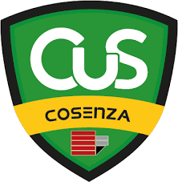
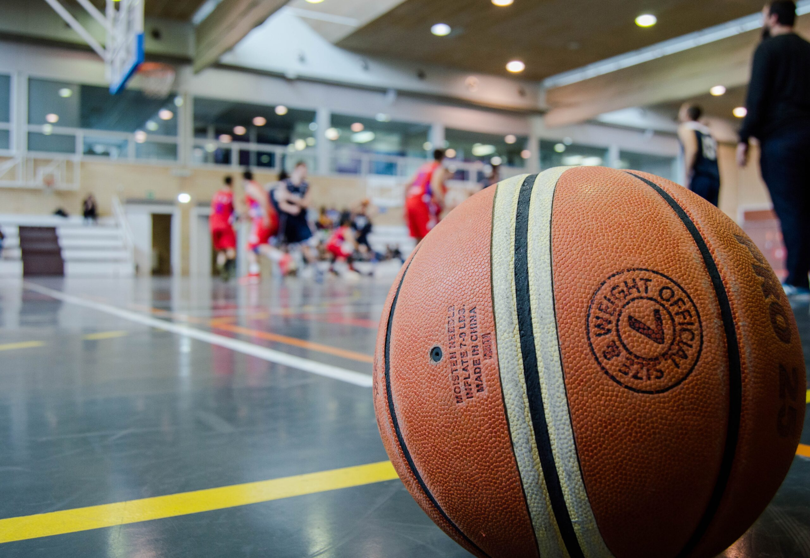
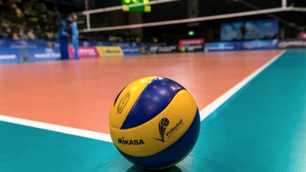
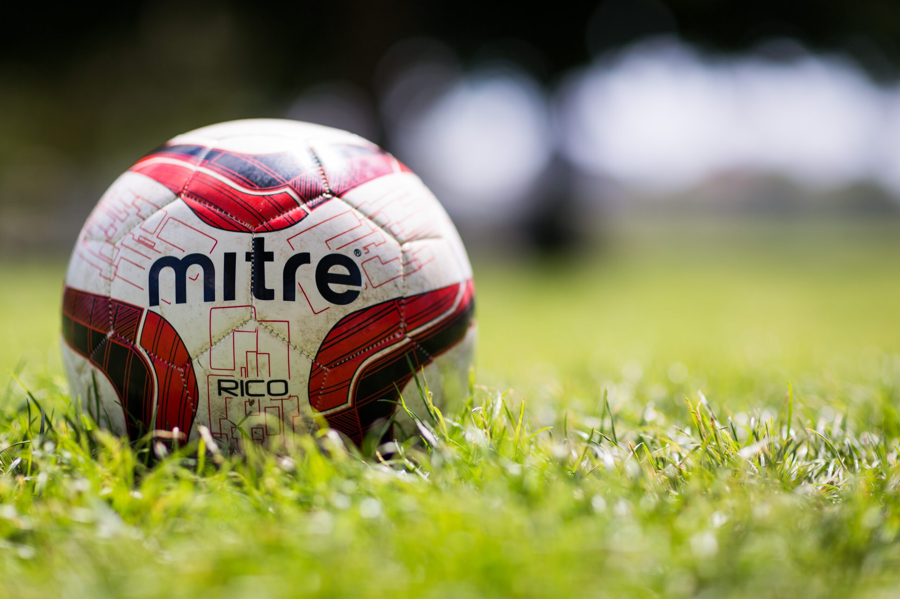

Chi siamo?
Il CUS Cosenza è un organo periferico del Centro Universitario Sportivo Italiano (CUSI), ente di promozione sportiva con personalità giuridica, riconosciuto dal Coni nel 1979. Il compito istituzionale del CUS Cosenza è quello di promuovere e organizzare la pratica sportiva propedeutica e agonistica degli studenti dell’Università degli Studi della Calabria, dei docenti e delle persone esterne ad esse. Gestisce inoltre tutti gli impianti sportivi costruiti sull’area dell’Unical Ogni anno accademico organizza una serie di corsi propedeutici alla pratica sportiva, relativamente a diverse discipline (Aerobica&Fitness, arti marziali, nuoto, pallavolo, pallacanestro, tennis, atletica leggera, judo) e numerosi tornei (calcio a cinque, pallavolo, pallacanestro, tennis). Punto di forza del centro è la disponibilità di impianti attrezzati e idonei per lo svolgimento delle oltre 40 attività presenti, nonché la presenza di convenzioni con altre strutture per lo svolgimento di sport quali sci, nuoto, canoa, vela, etc.. Il CUS Cosenza partecipa, inoltre, con gli atleti che si sono maggiormente distinti durante l’anno nelle diverse discipline, ai Campionati Nazionali Universitari, organizzati dal CUSI nelle diverse località italiane riservati esclusivamente agli studenti dell’Unical.
I nostri corsi più richiesti
Basket
Pallavolo
Calcio
Info per l'iscrizione
Per frequentare ogni corso è necessario effettuare il tesseramento tramite il nostro centro sportivo. Il tesseramento è aperto a tutti e ha validità dal 1 settembre al 31 luglio.
Per potersi tesserare è obbligatorio presentare: